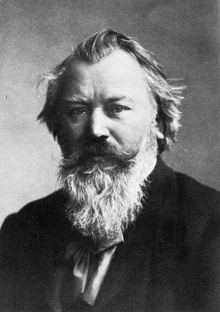

|  | Johannes Brahms (1833-1897) Catalogue des oeuvres |
| Biographie | Oeuvre | Références | Liens |
| Oeuvre | |
| Index | Index alphabétique de l'oeuvre vocale
|
Il est possible d'entendre des extraits d'oeuvre
(fichiers MIDI) en cliquant sur l'image suivante:  |
| Références |
|
| Liens |
Biographie, liste des oeuvres, photos, etc. |